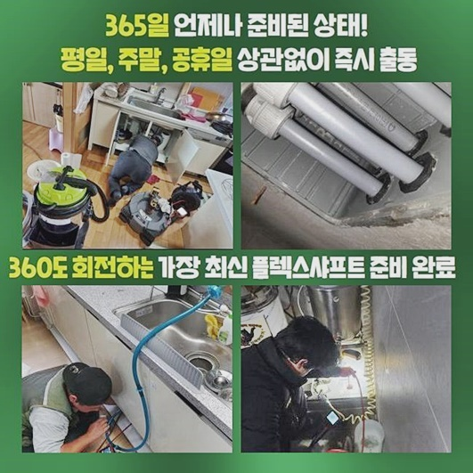
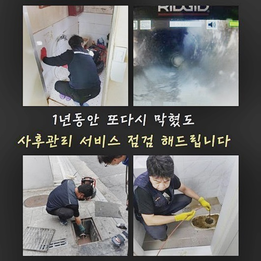
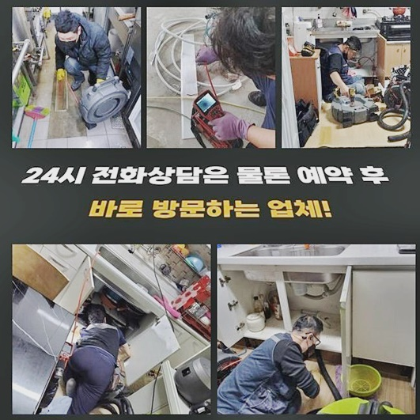
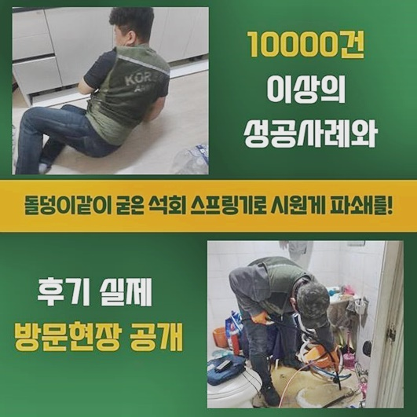
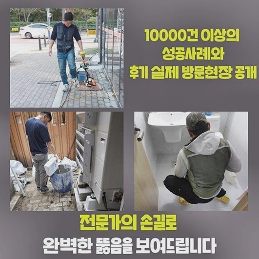

🏠 광진구 광장동오수관뚫음 화양동 하수관고압세척 출장수리
용인 싱크대막힘 전문 시공 후기

📋 작업 개요
- 위치: 용인
- 서비스 유형: 싱크대막힘, 하수구막힘, 배관막힘, 역류해결, 뚫는업체, 배관청소, 고압세척
- 작업 일시: 2024. 7. 27. 12:55
- 업체명: 하수구수사대 (010-5615-2118)
🔍 문제 상황
광진구 광장동오수관뚫음 화양동 하수관고압세척 출장수리
어디에서든지 하수관은 필수적인 존재인데요
하수관이 갑자기막혀 원활한 배수상태로 이루어지지못하면 곤란할겁니다
인터넷검색을 통하여 해결법을 조사하여 시도할순있어도 이물로인하여 확실히 막혀버렸다면 전문인의 도움을통하여 해결해보는것이 올바른 선택이겠습니다
저희업체를 통하여 문의하신분들 사례중 급작스럽게 발발된 막힘문제때문에 심각한곤란함을 경험하신분도 계셨어요
이번고객은 인테리어에대한 시공을진행한지 며칠지나지 못했는데도 이런일이 발현된것인지 당황하셨어요
빠르게 해결해줄것을 요청하였고 저흰 첨단도구들을 준비해서 조속한출동을 해드렸습니다
일반적인 가정에서는 화장실쪽이나 씽크대쪽에서 하수구막힘이 주로 발생하는데요
이런경우라면 불편한문제가 생길수가있죠
싱크대쪽에서 물활용이 어렵다면 평상시대로 지내기어려운 상태가되는데요
막힘현상을 처리하기위해 고객님은 주말시간에 방문을바라셨으며 원하는 시간대에맞춰 내방해드렸죠
주말하고 쉬는날까지도 포함시켜 새벽시간까지도 작업에 착수할수있기에 시간관계없이 연락만주신다면 내방드릴준비가 되어있어요

🔎 원인 분석
💡 전문가 진단: 정밀 진단 장비를 사용하여 슬러지의 고착 여부를 판명하고 타격/세척 작업을 실시했습니다.
며칠전부터 배수상태가 느려지기시작했고 엊그제들어서 확실하게 막히게되었음을 알려주셨죠
셀프조치로 뚫어보고자 했으나 잠깐의 해결로만이어졌고 동일한문제들이 계속해서 발생하고있다고 알려주셨어요
빠르게내방하여 싱크대쪽을 점검했어요
배수상태가 정상적이지않아 음식물잔해들이 쌓이면서 역류까지 발생한걸로 보였습니다
하수관이 막히게된 이유가 무엇인지 알아낸후 해결해보기위해 내시경장비를 활용하여 배관속을 확인했답니다
배수구입구 주위에있는 이물의경우 쉽게없앨수있었지만 깊숙히 위치하고있는곳에 있는것은 샤프트기를 이용하여 바깥으로 끌어내야했죠
다행이었던건 장기간 쌓여있지 않았으므로 쉽게없앨수가 있었답니다
자세히살펴보니 막힌이유였던 이물의 형태를보니 장판조각인게 확인되었는데 이게 도대체 왜이쪽에서 나오게된건지 알수가없었네요
의뢰자도 이물의정체를 모르는상황이었고 이물질을 보시고는 놀라시는것을 볼수있었어요
샤프트도구를 활용하여 분해과정을 진행할땐 기술자의 능력이중요해요
걱정하지마세요! 확실하고깔끔히 처리할것을 확인할수있어요!
다음장소에 방문해서 문제점을 파헤쳐보니 하수관에서 역류현상이 발생하고있었어요
막힘증세를 신속하게 뚫고자한다면 확실한원인을 알아내야해요

🔧 작업 과정
한번더 말씀드리는것으로 물이확실히 흘러야하지만 막힘으로인해 역류가일어나면 영업장이든 가정이든불편을 초래시킨답니다
배관안속에서 문제가 발생하게된것을 알수있었네요
풍부한 경력들과 노하우를통해 최첨단장비들을 사용해서 세심하게 작업해드렸죠
내시경과 플렉스샤프트와 같은 고성능기계를 활용하면 하수도내부와 오염상태까지 파악할수있으며 이를통하여 작업시작전 필요한정보에 대하여 습득할수있어요
오염물이퇴적된 배관이라면 고약한냄새를 발생시키기에 빠른대처로 조치를취해야해요
배관속을 살핀뒤 알맞게조치하여 역류증세를 해결할수있었죠
다음장소는 주방씽크대가 막힌곳이었는데 이에대하여 신속해결을 원하셨는데요
음식을만들때나 설거지를해볼때 물이내려가지않고 넘치기까지하는 상황임을 말씀하셨어요
고객분의 일상을 망가뜨리는 역류현상이 계속하여 나타난다면 2차적인 문제로 이어질수있기에 조속하게 해결해드리고자 막힌이유를 알아내기위해 작업을 시작하기로했어요
배관내시경끝에는 조명과 카메라로 이루어져있어 내부지점까지 살펴볼수있어요
싱크대막힘에서 자주보이는 기름슬러지의경우 제거해내기가 어렵습니다
이런상태에선 물을통해 중화시켜준뒤 석션장비를 활용하여 흡입해내는 방식으로 진행할수있어요
고착된 이물질들이 쌓여있다면 분쇄기계를 통해서 고착물질을 부수어내고 빨아올릴수있죠
하수관안이 깊다고하더라도 청소할수있습니다
카메라기계를 통해서 구부러진부분이나 꺾인곳까지 파악해볼수있고 스케일링기계로 오염물을제거해 원활한 배수상태로 만들어주죠
고객분께 수립계획을 전달하는게 중요사항중 하나에요
하수도가막혔을때 방치하게될경우 심각한문제로 이어져서 큰피해가 일어날수있으니 빠르게 대처해보실것을 권유드려요
직접뚫기위하여 날카로운걸로 배수관에 넣어보거나 마트같은데서 쉽게볼수있는 클리너제품을 이용하는경우 일시적해결로만 연결될수밖에 없답니다
전문가에게 도움을요청해 어떤이유로 막혔는지 자세히파악해 현장상황에 알맞은대처를 진행해야해요
그렇기에 하수도막힘은 전문성이 요구되는것이죠


✅ 작업 완료
가벼운생각으로 일관하지마시고 막힘징조가 나타나기시작할때 처리해보실것을 적극추천드리도록 하겠습니다
성심성의껏 작업을진행해 여러가지의 배관문제를 완벽하게 처리할것을 약속할게요!
하수구와관련해 문제가있을경우 전화주세요!
어떤곳이라도 1시간안팎으로 도착할수있고 작업계획에있어 투명히 공개하니 안심하시길 바랄게요
이것말고도 궁금한부분이 있다고한다면 아무때나 전화주셔서 물어봐도되니 편안하게 의뢰주시면 세밀한상담으로 진행할게요!
앞으로의 배관막힘문제 저희들과함께 해결하시는건 어떨까싶습니다



⚠️ 주방 싱크대 배관 막힘 예방 수칙
- ✅ 기름기가 묻은 식기나 프라이팬은 설거지 전 키친타올로 반드시 기름때를 닦아내세요.
- ✅ 주기적으로 싱크대 개수대에 뜨거운 물을 가득 받아 한 번에 내려 배관 내부 기름을 씻어내세요.
- ✅ 배수구 거름망을 미세한 필터로 사용하시고 음식물 찌꺼기가 틈으로 새어 들지 않게 관리하세요.
- ✅ 베이킹소다와 식초를 뜨거운 물과 함께 일주일에 한 번씩 부어주면 배관 살균과 막힘 예방에 좋습니다.
💡 핵심 정리
- 확실한 장비 작업(내시경 점검 및 샤프트 스케일링)으로 원인을 뿌리 뽑습니다.
- 작업 후 1년 이내에 동일한 부위 재발 시 100% 무상 A/S 서비스를 보장합니다.
- 서울 · 경기 · 인천 전 지역에 24시간 언제든 긴급 출동할 수 있도록 항시 대기 중입니다.
❓ 자주 묻는 질문 (FAQ)
🚨 용인 싱크대막힘 문제로 고민이신가요?
정확한 원인 진단과 확실한 시공으로 재발 없는 해결을 약속드립니다.
24시간 긴급 출동 | 서울 · 경기 · 인천 전지역 | 1년 내 재발 시 무상 A/S